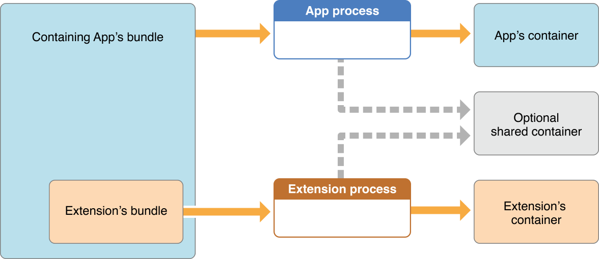

探索Today Extension的奥秘
本文重点介绍Today Extension的机制，并通过一个Demo讲解整个实现过程。
简介
- extension并不是一个独立的app，它有一个包含在 app bundle 中的独立 bundle，extension 的bundle 后缀名是 .appex。其生命周期也和普通 app 不同。
- extension不能单独存在，必须有一个包含它的 Containing app。
- extension 需要用户手动激活 比如 Today 中的 widget 需要在 Today 中激活和关闭
Today extension 的特点
- 可以在锁屏情况下 快速查看
- 及时 简单直观 快速
- 简单交互 不可以输入 打开 Container APP
生命周期

可以看到 Today 的生命周期分为3步
开始
在用户打开Today 点击extension时，系统就会加载extension应用，这是生命周期的开始。
执行任务
extension启动后，开始执行它的代码。
终止
在用户取消任务，或者任务执行结束,系统会将其杀掉。
通讯

- extension 是属于Today的插件 它和Today的通讯是直接的
- 通过openURL的方式打开Container APP 当然也可打开其它的应用
- 通过一个公共的数据区与Container来交换数据
数据共享

公共的数据区 extension 和 Container 都可以读写
其实是一个配置了相同 groupId 的 NSUserDefault
Today 的尺寸
iOS不同设备 Today 的宽度
iphone4s /5/5s/6/6s 只有竖屏一种情况
| 设备 | 横屏左 | 横屏右 | 竖屏左 | 竖屏右 |
|---|---|---|---|---|
| iphone6/6s plus iOS 8 | 666 | 666 | 414 | 414 |
| iphone6/6s plus iOS 9 | 736 | 736 | 414 | 414 |
| iPad | 471 | 328 | 512 | 512 |
| iPad Pro | 629 | 437 | 471 | 328 |
可以看到 不同的设备 extension 的宽度是很不一样的
iPhone Plus 可以横屏
iPad 在横屏时候 分为左边和右边
iPad Pro 情况就更复杂,竖屏的时候相当于 iPad 的横屏 横屏的时候 宽度也很大
所以在设计 Extension 时候 最好用 autoLayout
实践
下面就花10分钟来 实践写一个最简单的 extension 具体可以看 Demo.
在 Demo 里我弄了一个非常简单的 App 就只是一个UITextField 和一个button
点击 OK 按钮, 会把UITextField的文本保存到公共的 Userdefault 里面.
当然还开启了一个 scheme 用来让 extension 可以通过 openUrl 来打开
另外 有一个 shareData文件
代码如下:
1 | struct ShareData { |
shareData 只是用来存储公共数据 包括3个常量和2个方法:
saveShareData 用来把值存到指定 GroupId 的 NSUserDefaults 中
getShareData 从指定 GroupId 的 NSUserDefaults 中取值
ok Container app 介绍完毕.下一步
添加一个 extension 的 Target 名称是 testEExtension
配置证书
首先得要在 iTunes Connect 里配置 证书文件的 groupId 例如: group.com.hujiang.demo
注意,必须要以 group 开头
开启 App Group
在Xcode中 分别为container 和 extension 的Target Target —> Capabilities
开启 app group 功能
开启好之后 工程里会有 两个entitlements 文件
修改info.Plist文件
####先说明一下这个Plist中 NSExtension下的几个字段
- NSExtensionAttributes 表明是那一种类型的 extension
- NSExtensionPrincipalClass 使用代码时 ViewControlle r的名称
- NSExtensionMainStoryboard 使用 storyboard storyboard 文件名,默认是MainInterface.
如果不使用 storyboard 就一定要指定 NSExtensionPrincipalClass
删除 NSExtensionMainStoryboard,然后添加 NSExtensionPrincipalClass
使用你的新ViewController的名字
这里我们不使用 Storyboard 我们用自定义的 TodayViewController 作为主界面.
首先删除 NSExtensionMainStoryboard字段 ,添加 NSExtensionPrincipalClass 字段,设置 NSExtensionPrincipalClass 的 value 为 TodayViewController.
TodayViewController 的实现
首先在 TodayViewController里添加一个 button
1 | var button: UIButton! |
然后在 viewDidLoad 里面
1 | override func viewDidLoad() { |
其中 self.preferredContentSize是控制显示这个 extension 的高度为300
在viewWillAppear里显示存储的值
1 | override func viewWillAppear(animated: Bool) { |
必须把ShareData 添加到 extension的Target 里面
1 | func openAction(sender: AnyObject?) { |
编译运行 你会得到
一个错误
>
testEExtension[6048:147384] Terminating app due to uncaught exception ‘NSInvalidArgumentException’, reason: ‘ setObjectForKey: object cannot be nil (key: <__nsconcreteuuid 0x7f8ca0513420=""> 9DB046F6-C18B-44CC-9148-1860D9C35B8F)’
这个问题只在 swift里才有, 解决方法是:
- 在extension的 build setting 的Packaging 里的Defines Module 设置为 YES.
- 在info.plist 的 NSExtensionPrincipalClass 前加上模块名 testEExtension.
然后编译运行 记得选中Extension 的target
最后的效果图:
点击 button 也可以打开 Contaier App .结束!
总结
可以看到, 做一个 extension 还是很简单的 一起动手做一个吧!
参考资料
- 官方文档
- App Extension编程指南 中文版
- WWDC2014之App Extensions学习笔记
- iOS 8 Extensions
- WWDC 2014 Session笔记 - iOS 通知中心扩展制作入门
- App Extension编程指南（iOS8/OS X v10.10）：扩展类型–Today
- iOS 8 Today Extension Tutorial
- iOS 8: Creating a Today Widget
- 自定义 URL Scheme 完全指南
- iOS Framework制作全攻略
- http://www.cocoachina.com/ios/20140904/9527.html
- http://www.toptal.com/ios/ios-8-app-extensions
- https://developer.apple.com/library/prerelease/ios/documentation/UserExperience/Conceptual/MobileHIG/AppExtensions.html#//apple_ref/doc/uid/TP40006556-CH67-SW1